Case study contents
UX Case Study · Enterprise AI · Healthcare
From fragmented contact-center workflows to one trusted AI workspace.
Designing an AI scheduling copilot that helps healthcare agents resolve requests faster without taking control away.

Executive summary
Healthcare agents were drowning in software instead of listening to patients.
I consolidated four fragmented systems into one canvas. When a moderated usability study showed that wasn't enough, I evolved it into an AI copilot NextIQ that listens to the live call and does the searching, so the agent can focus on the patient.
But this is healthcare, so the copilot never became the only way through. The manual scheduler stayed in place as the safety floor — every AI action pre-fills it, and any agent can take manual control at any time. It shipped as an MVP pilot, proven with a moderated study plus impact projections modeled on published benchmarks, built on one non-negotiable: the AI recommends, the human decides.
Measured in testing (n=10):
My role
Lead Product Designer — the single design owner end-to-end, and design lead across a cross-functional pod of Product, Engineering, and a two-person UX Research team.
Strategy & ownership
Led design for scheduling, prescriptions, and bill pay; translated research into a direction and defended it, including a pivotal disagreement over how much to automate (Section 14).
Craft
Flows, wireframes, hi-fi screens, and the AI copilot interaction model, authored from first principles.
Cross-functional leadership
Daily feasibility alignment with PM and Engineering; partnered with Research to keep every decision evidence-based.
The business problem
Voice is still the dominant channel in healthcare. Every minute an agent spends hunting across systems is a longer hold, a longer call, and a higher chance the patient calls back or leaves.
Patient identity, scheduling, prescriptions, and billing each lived in a different system including EHRs we didn't control. To finish one request on a live call, the agent became the search engine: switching across five apps and screens on average, using the hold button as a crutch, and holding the entire workflow in their head under time pressure, where being wrong isn't an option.
The problem wasn't a badly designed screen. It was that the work had no home.
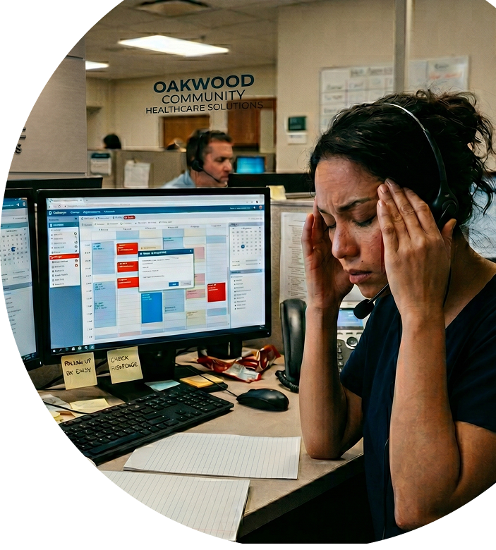
Market context (Nextiva's published healthcare research not results from this project): ~60% of calls to smaller practices go unanswered; 76% of healthcare leaders report being overwhelmed by administrative workload; 1 in 3 patients leave a provider after a single bad experience.
Research & discovery
A two-person UX Research team ran a mixed-methods study user interviews, contextual inquiry, workflow analysis, and moderated usability testing. I wasn't a passenger: I helped shape the questions, sat in on every session, pressure-tested findings against feasibility, and owned the translation from insight to design decision.
I started inside the system agents actually lived in.
Before I designed a single scheduler screen, I studied the incumbent EHR. I collected and annotated the real scheduling, appointment, and patient-workflow screens the fields, the search logic, the status states and mapped how a booking truly moved through the system, branch by branch.


That study is why the scheduler I designed fit clinical reality instead of an idealized version. The specialization → provider → visit type → location → slot order and the verification gate both came directly from how the incumbent system structured the work — and grounding the redesign in the system agents already knew made the consolidation argument concrete to stakeholders.
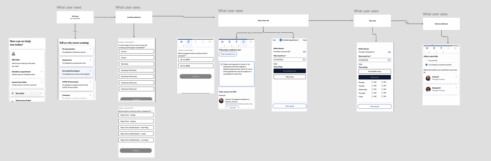
What we learned:
- Constant system-switching agents touched an average of five apps to finish one request.
- Fragmented patient info the full picture never lived in one place.
- The hold button as a crutch agents parked patients just to go find things.
- Call-backs as failure many requests couldn't close in one call, and most patients who don't reach a person on the first try never call back.
- They wanted one workspace not another tab to alt-tab into.
Goals
One canvas
End the alt-tab between scheduling, prescriptions, billing, and context.
Lower cognitive load
The system carries the memory work; the agent carries the conversation.
Finish in one call
Fewer holds, fewer call-backs.
Trustworthy AI
Explainable, correctable, always subordinate to the human.
Safe by default
HIPAA and clinical reality at every step with a manual path that always works.
The framing question
How might we let an agent complete a request in a single, unbroken conversation without holding the entire system in their head, and without ever depending on the AI being right?
What I built first the manual scheduler
The roadmap was scheduling-first. I consolidated the fragmented tools into one workspace and gave scheduling a single structured flow specialization → provider → consultation type → location → date → slot with rescheduling reusing the pattern and the current appointment pinned so the agent never lost the thread.
One canvas, no new tab
The scheduler opened inside the call workspace, not as another system to alt-tab into.
Pinned context on reschedule
The current appointment stays visible, so the agent isn't holding it in memory mid-call.
Structured over free-form
A guided path, modeled on the incumbent EHR's real sequence, to cut booking errors where a wrong slot has clinical consequences.
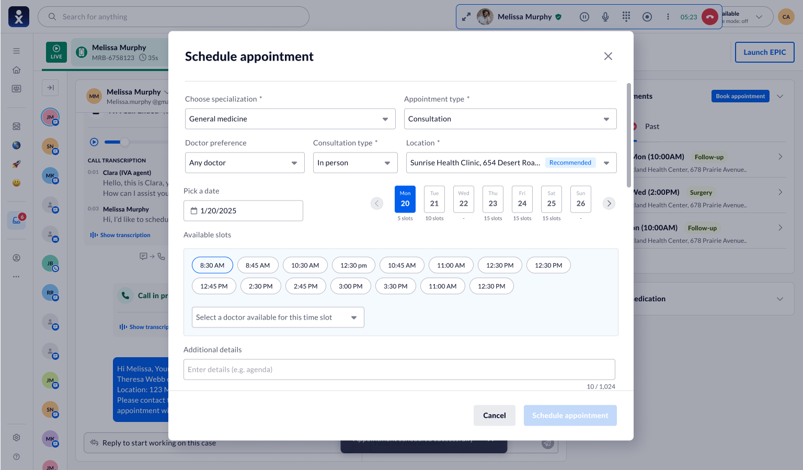


It killed the alt-tabbing. It also exposed the ceiling of "organize the chaos better."
Patient verification the HIPAA hard gate
Before any request is actioned, the agent has to prove they're talking to the right patient. In a system that would eventually let an AI pre-fill actions, identity verification is the one place I designed to be un-skippable.
- Inline, glanceable check for returning callers — DOB · MRN · ZIP, one field at a time, without stopping the conversation.
- Full blocking modal for new patients, or the moment any field mismatches the hard stop.


I walked this condensed flow through compliance stakeholders before pilot. They signed off because the hard gate — mismatch → full modal → frozen pre-fill — stayed intact.
The test that forced the pivot
Tidy forms are still forms. The agent was still the search engine reading availability, typing while the patient waited. So we tested the manual scheduler properly, and the numbers were blunt.
Manual scheduler moderated usability study (n = 10 agents):
- SUS: 61 — below the 68 benchmark; "OK, not good."
- Unaided completion: 4 of 10 agents booked a follow-up without moderator help.
- Median time-on-task: 4m 20s.
- Holds: 7 of 10 sessions still put the (simulated) patient on hold.
- Verbatim: "not usable as is" for scheduling and refills.
Illustrative quotes below representative of session feedback, not verbatim transcripts.
"You've made it neater. I'm still doing all the thinking out loud while they sit on hold."
★★★☆☆
Agent 03
Front-desk, Practice B
"I still have to hold their whole schedule in my head to know if a slot even makes sense."
★★★☆☆
Agent 07
Front-desk, Practice A
When every participant hits the same structural wall, that's not a preference it's a signal. It told me the next move wasn't a better form. It was a different kind of help.
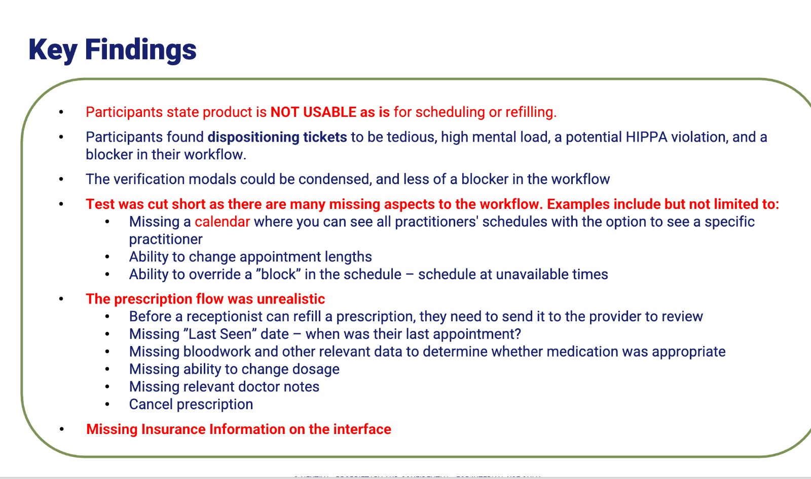
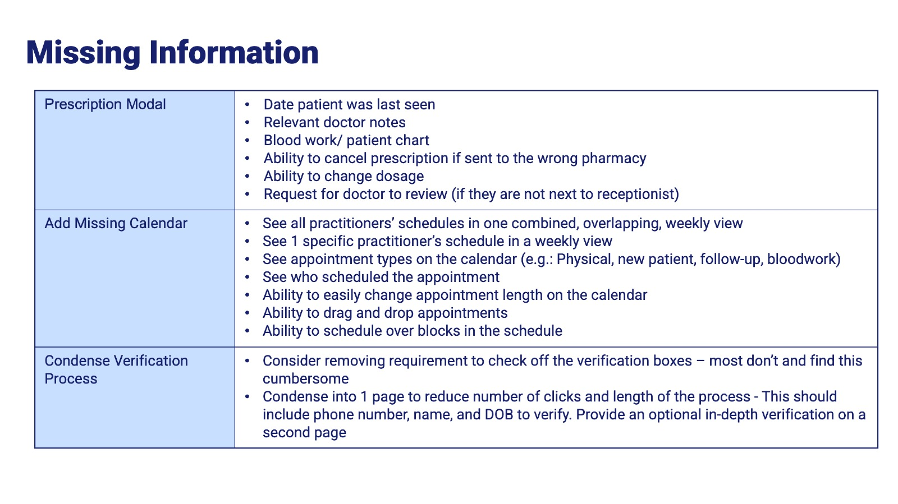
The pivot — and why the manual scheduler stayed
Don't make the search faster do the search for the agent.
The study pointed at two moves, not one. First, I closed the structural gaps it exposed — a real calendar, a realistic refill flow, tighter verification. Second, I layered a copilot on top to remove the searching entirely. NextIQ listens to the live transcript, identifies intent, and surfaces the appointment, prescription, or billing action the agent would otherwise go dig for.
Here's the decision that matters most in a healthcare product: the improved manual scheduler was not thrown away. It became the floor the AI sits on.
Every copilot suggestion pre-fills that same scheduler, and the agent can always take the wheel — edit any field, or ignore the AI entirely and book by hand.
The copilot never took the wheel. In healthcare you don't want a single point of failure that happens to be an AI — the human must always be able to complete the task without it. That principle became the line I fought to hold (Section 14).
| Manual only | Final · AI-assisted | |
|---|---|---|
| Finding availability | Agent searches by hand | Copilot surfaces options |
| Filling the booking | Types every field | Pre-filled; agent confirms |
| Holding context | In the agent's head | Surfaced, not remembered |
| AI unsure or wrong | — | Falls back to manual scheduler |
Designing the AI, decision by decision
The copilot wasn't one decision — it was a stack of them, each with options I rejected and a reason I didn't.
Desk research plus direct consultation with ML engineers, comparing four approaches on accuracy and speed.
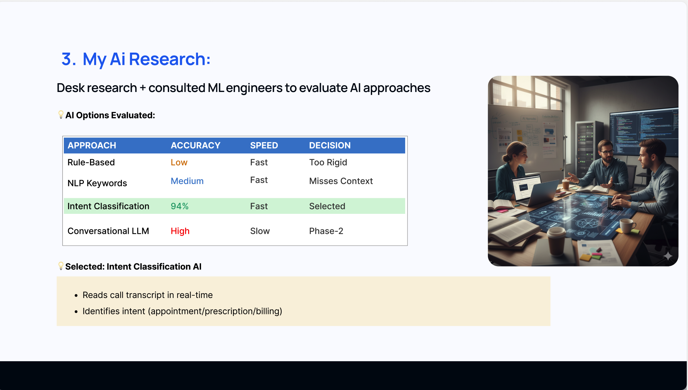
Four placements compared before committing.
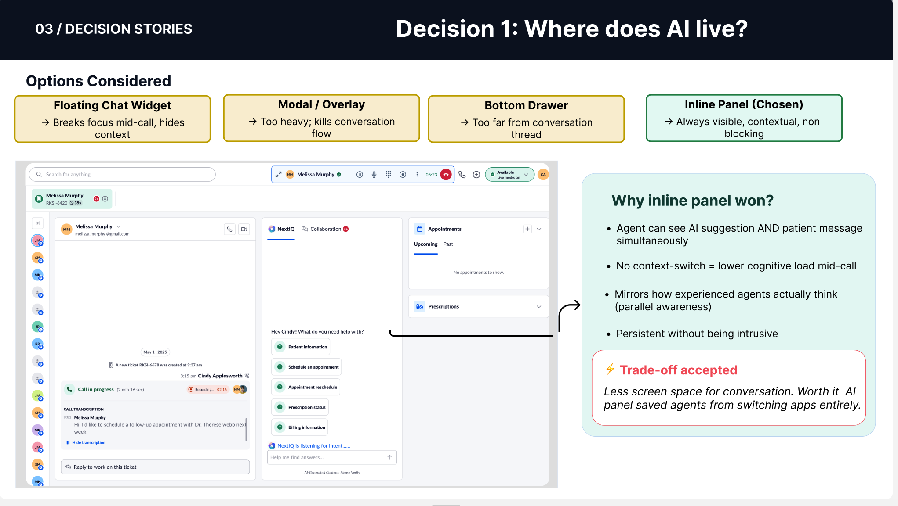
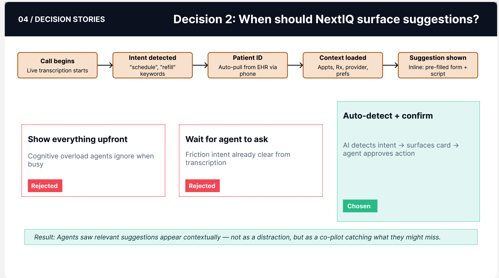
Clarify ambiguity
Natural language → structured intent.
Show reasoning
Evidence chips before acting, not a black box.
Synthesize
Transcript + EHR calendar + patient preferences merge into one card, not three lookups.
Recommend, don't act
Suggestion → script → pre-filled form, always awaiting a human confirm.
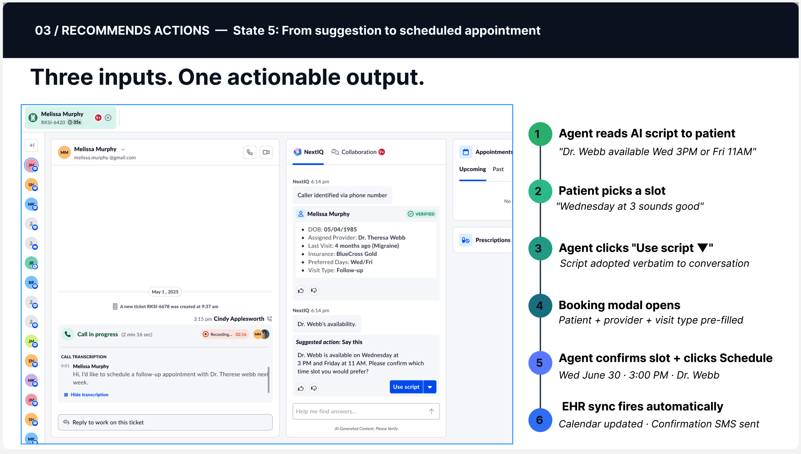
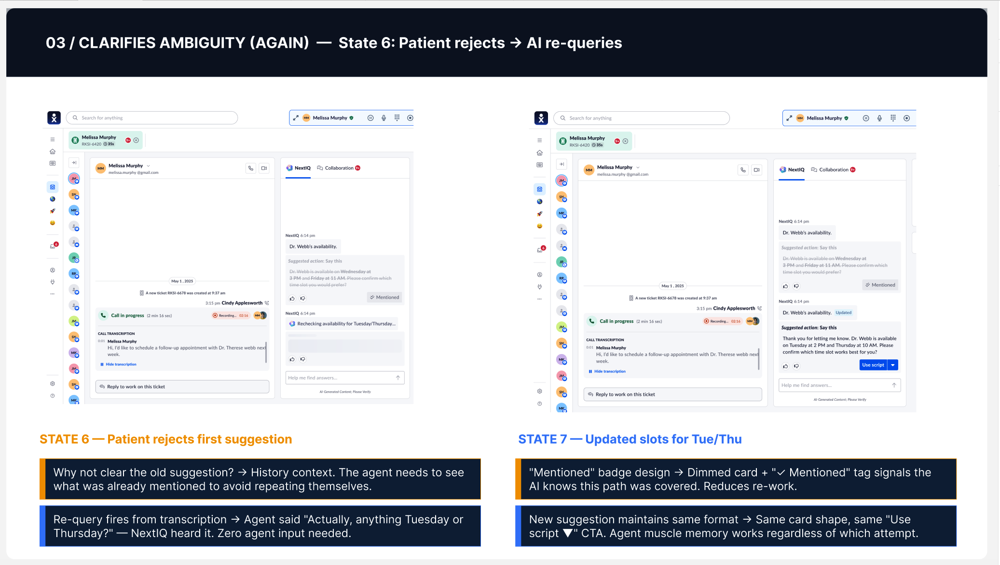
The copilot lifecycle
I moved from low to high fidelity deliberately — flows and component logic before pixels, in a tight loop with Engineering on what the AI could reliably do.
That process produced a live copilot lifecycle, shown across four real screens from the same call.
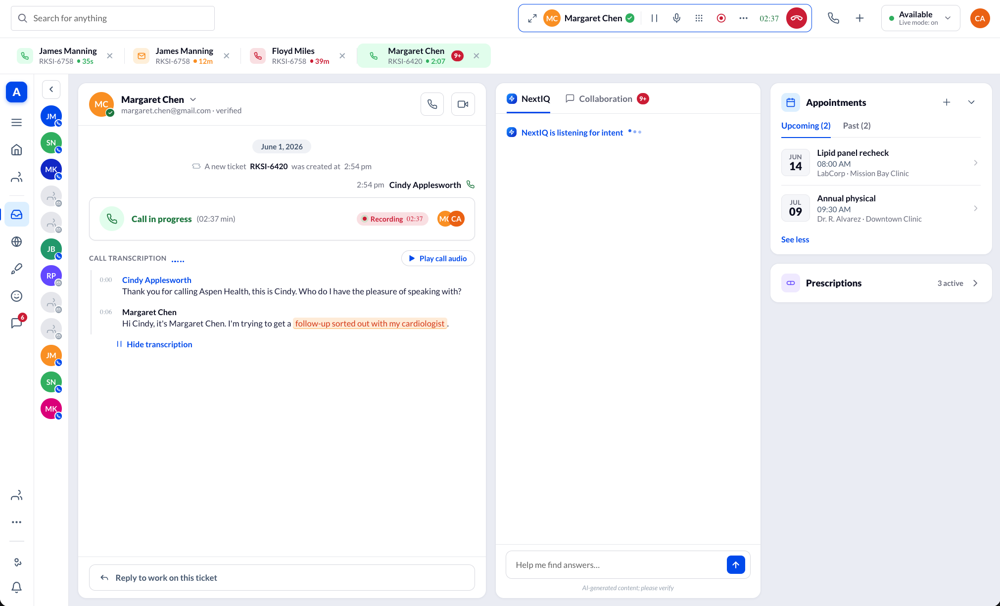
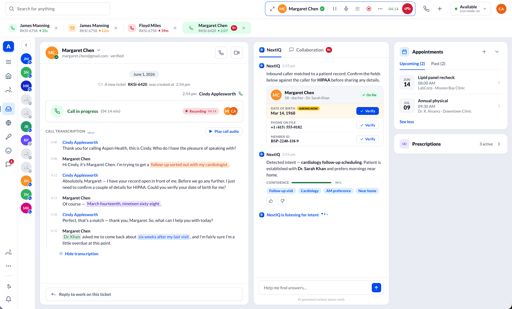
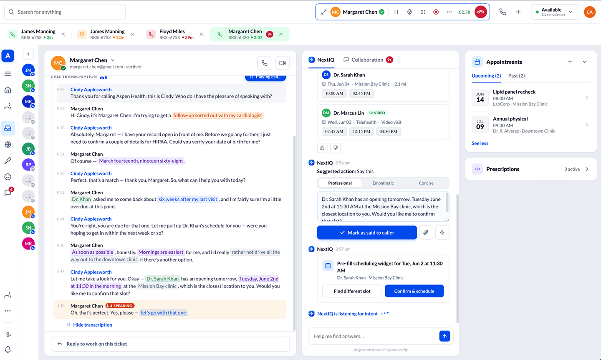
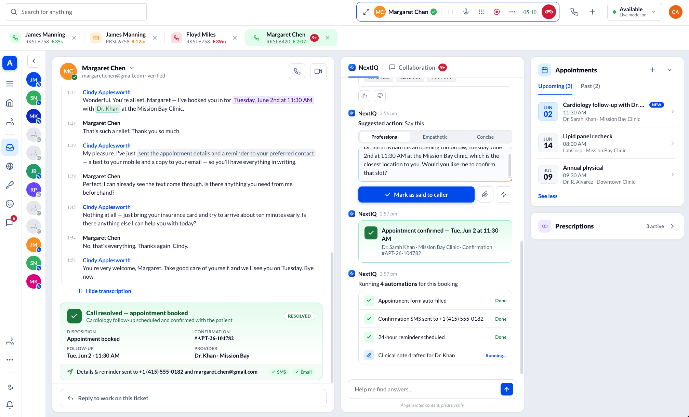
Prescriptions and billing, in the same canvas. Scheduling was the deepest flow, but the intent model was built to generalize. When the patient pivots mid-call to "what do I owe?", NextIQ detects the second intent and surfaces the billing action — no new tab. Prescriptions followed the same pattern; deepening the refill flow with a live medication list was the top V2 item.
Designing for the wrong answer
A copilot you can only trust when it's right isn't trustworthy — it's lucky.
In healthcare, the failure path is the design, so I designed the copilot's bad days as carefully as its good ones — and every failure path lands on the manual scheduler.
Low confidence → steps back
Below threshold, NextIQ stops pre-filling and switches to "I'm not sure — here's what I heard," handing the agent the manual scheduler instead of a guess.
Wrong intent → cheap to correct
Evidence chips make a mismatch visible at a glance, before confirm; one tap opens the full editable scheduler. Correction is the fast path, not the penalty box.
Wrong patient → the hard stop
Intent is never acted on until inline verification matches. A mismatch escalates to the full modal and freezes the pre-fill.
Graceful failure → no dead ends
When the AI genuinely can't help, it says so and hands control back cleanly — to the manual path that always works.
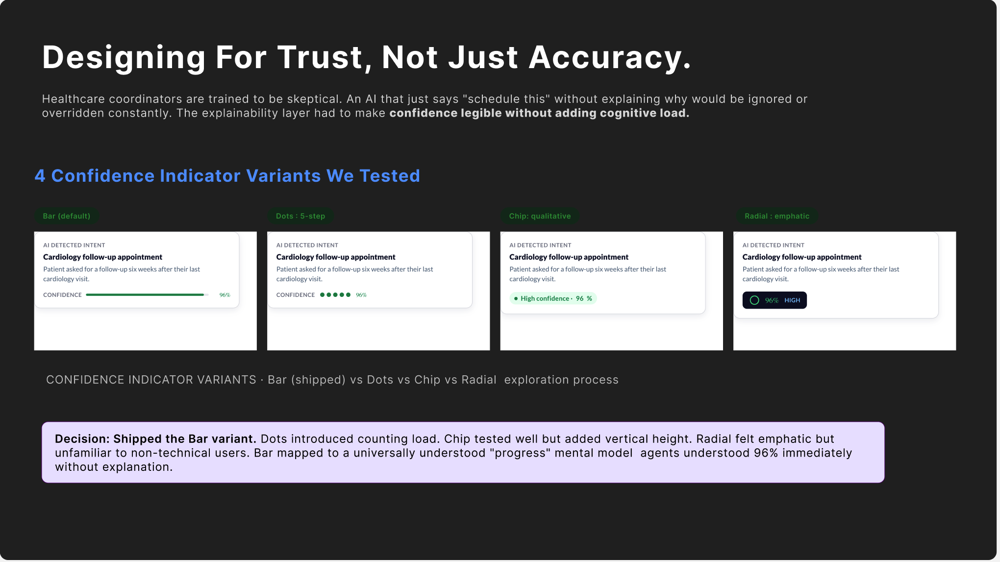
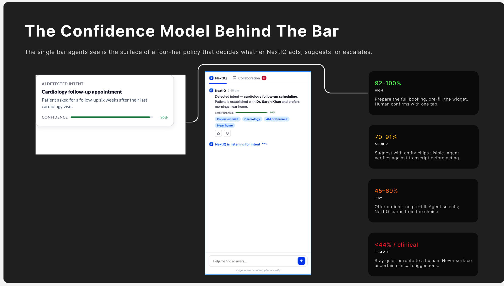
Trade-offs I made
Naming what I gave up — and why the trade was worth it — is how I keep a design honest.
Verification speed vs. rigor
Chose an inline, glanceable HIPAA check over a blocking modal on every call. Mitigated by one field at a time and a full modal for new patients and mismatches. Validated with compliance before pilot.
Automation vs. trust
Chose pre-fill-and-confirm over letting the AI book and send on its own. Gave up the flashier demo; one extra tap bought a system agents actually rely on (Section 14).
Simplicity vs. flexibility
Kept the full, editable manual scheduler behind the AI's pre-fill instead of one-click booking — because "actually, can we change that?" is the common real moment.
The disagreement I had to win
The most important design decision on this project wasn't a screen. It was a "no."
Midway through, a stakeholder made a reasonable-sounding push: let NextIQ book and send confirmations autonomously when confidence is high. The demo would dazzle — patient asks, appointment booked and texted, no agent tap. On paper: faster, cheaper, better in a sales deck.
I disagreed, and had to make the case without sounding like the designer who says no to everything:
The stakes aren't symmetric. In consumer SaaS an autonomous mistake is an annoyance; in healthcare, booking the wrong patient into the wrong specialty is a clinical and legal event. The downside was uncapped; the upside was one saved tap.
Trust is the actual product. Agents didn't fear a slow AI — they feared being blamed for something they couldn't intercept. An agent who can't override won't lean on the tool; they'll fight it. Adoption dies quietly.
We could get ~90% of the speed without the risk. Pre-fill-and-confirm removes the searching and typing — the real time sink — while keeping the human on the trigger.
How I made it land: I put the autonomous version in front of agents and watched them hesitate to trust a system that could act without them — then watched the same agents relax and rely on pre-fill-and-confirm the moment they saw how easily they could override it. Confidence in the action taken rose from 3.1 to 4.6 out of 5 once override was obviously easy. Control didn't slow agents down; it was the thing that let them speed up.
Resolution: we shipped pre-fill-and-confirm, and copilot, never autopilot became a stated pilot principle — not because I won an argument, but because the evidence did.
What testing proved
The pivot wasn't a hunch. I re-ran the same moderated protocol on the copilot (n = 10 agents, matched tasks) against the manual baseline.
| Measure | V1 · Manual | Final · Copilot | Δ |
|---|---|---|---|
| SUS usability score | 61 | 86 | +25 (OK → top decile) |
| Unaided task completion | 4 / 10 | 10 / 10 | +6 |
| Median time-on-task (book a follow-up) | 4m 20s | 1m 30s | ~65% faster |
| Holds initiated during task | 7 / 10 | 0 | −7 |
| Apps / screens touched | ~5 | 1 canvas | −4 |
| Cognitive load | 74 | 39 | −35 |
| Agent confidence in action (1–5) | 3.1 | 4.6 | +1.5 |
Illustrative quotes below — representative of session feedback, not verbatim transcripts.
"The moment I saw I could edit it before it went out, I stopped double-checking everything by hand."
★★★★★
Agent 05
Front-desk, Practice A
"I actually got to just talk to the patient. It was pulling the slots while I was still listening."
★★★★★
Agent 09
Front-desk, Practice C
"No more putting them on hold to go dig around. It's right there, already sorted."
★★★★★
Agent 02
Front-desk, Practice B
Impact — measured and projected
It shipped as an MVP pilot across 3 practices and ~40 agents. Twelve-month production metrics don't exist yet, and I won't manufacture them.
| Metric | Baseline | Target | Why it matters |
|---|---|---|---|
| Average Handle Time (AHT) | — | ↓ 20–30% | The 65% in-session gain discounts heavily in production |
| First-Call Resolution (FCR) | — | +15–18 pts | Fewer holds + one canvas = more one-call closes |
| Callback / repeat-contact rate | — | ↓ (track) | Directly attacks the ~60% unanswered-call problem |
| Copilot acceptance vs. override rate | — | Track | The trust thesis, quantified |
| HIPAA verification completion | — | 100% | Guardrail on the verification trade-off |
Reflection
My job wasn't to design the smartest AI in the room — it was to design the relationship between a stressed human and a fallible machine, where being wrong isn't an option. I made the case for a pivot when a tidy first version tested well enough to ship and not well enough to matter, held the line on human control against a push for more automation, and — because it's healthcare — kept the manual scheduler alive underneath so the AI never became a single point of failure.
A V2 starts with the real practitioner calendar agents asked for, a deepened refill flow with a live medication list, and billing made permanently visible.
The principle carries into everything I design now: for enterprise AI in healthcare, copilot — never autopilot.